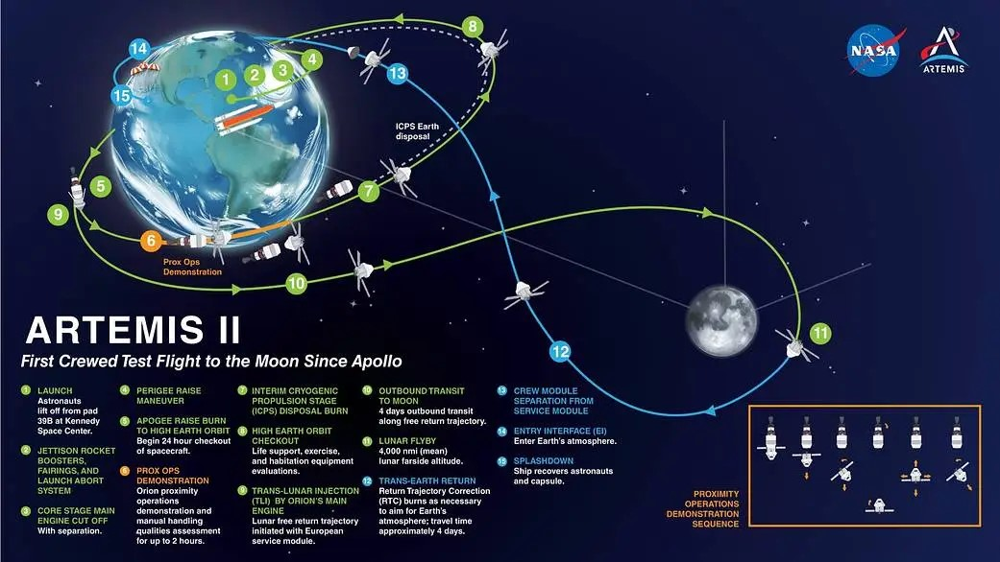

În această activitate urmărim două idei simple: cum se deplasează racheta și capsula și cum se transformă energia.
Pe scurt
La lansare, motoarele rachetei adaugă energie sistemului.
La revenire, capsula pierde din energia mecanică mai ales din cauza interacțiunii cu atmosfera.
Energia nu dispare: ea se transformă.
Ce vei observa
Energia cinetică crește când viteza crește.
Energia potențială gravitațională depinde de înălțime.
Energia mecanică este suma lor.
Important: valorile din simulator sunt simplificate, ca să poți face legătura cu lecția de fizică, nu ca să reproduci perfect o misiune reală.
Pagina 2 • Formulele de bază
Ce energii folosim?
Energia cinetică
Ec = m · v² / 2
Depinde de masă și mai ales de viteză. Dacă viteza crește mult, energia cinetică crește foarte mult.
Energia potențială gravitațională
Ep = m · g · h
Depinde de masă, de g și de înălțime. Cu cât corpul este mai sus, cu atât Ep este mai mare.
Energia mecanică
Em = Ec + Ep
Pentru un corp, energia mecanică este suma dintre energia de mișcare și energia legată de poziție.
În această activitate luăm g = 10 N/kg, așa cum se face des la gimnaziu.
Pagina 3 • Ce se întâmplă în zbor
Racheta urcă. Capsula revine.
La lansare
Motoarele împing gazele în jos, iar racheta este împinsă în sus. De aceea, viteza crește și crește și energia cinetică. În același timp, racheta urcă și crește și energia potențială.
La întoarcere
Capsula vine spre Pământ cu viteză foarte mare. La intrarea în atmosferă, aerul o frânează puternic. O parte mare din energia mecanică se transformă în căldură.
Ideea-cheie
Nu vorbim doar despre „merge repede” sau „este sus”. Vorbim despre transformări de energie pe care le putem descrie prin formule.
Pagina 4 • Privește traseul
Imagine: traiectoria misiunii Artemis II
Privește traseul și încearcă să răspunzi: unde crește înălțimea, unde viteza rămâne foarte mare și unde începe frânarea în atmosferă?

Imagine de orientare pentru traseul misiunii. Nu trebuie memorată în detaliu. Ea te ajută să vezi că nava are o traiectorie, iar pe diferite porțiuni ale traseului se schimbă înălțimea, viteza și transformările de energie.
Ce legătură are imaginea cu fizica?
când capsula este mai sus față de Pământ, energia potențială gravitațională este mai mare;
când se deplasează foarte repede, energia cinetică este foarte mare;
la revenirea prin atmosferă, o parte importantă din energia mecanică se transformă în căldură.
Pagina 5 • Joacă-te cu simulatorul
Simulator: urmărește cum se schimbă energiile
Mută glisorul de la 0 la 100 și observă fazele zborului.
Faza: lansare
Înălțime36 km
Viteză2.2 km/s
Energii pentru o capsulă simplificată de 1000 kg
Ec = 2.4 GJ • Ep = 0.36 GJ • Em = 2.76 GJ
Observă
În faza de lansare, motoarele adaugă energie, de aceea cresc și viteza, și înălțimea.
Pagina 6 • Leagă simularea de lecție
Gândește ca un fizician
1. Când crește energia potențială?
Când înălțimea crește.
2. Când crește energia cinetică?
Când viteza crește.
3. De ce scade energia mecanică la intrarea în atmosferă?
Pentru că o mare parte se transformă în energie internă / căldură din cauza frecării cu aerul.
Apasă pentru concluzia lecției
La lansare, motoarele alimentează sistemul cu energie. La reintrare, atmosfera preia o parte mare din energia mecanică și o transformă în căldură. De aceea, scutul termic este esențial.
Pagina 7 • Întrebarea de final
Putem recupera energia capsulei la intrarea în atmosfera Pământului?
Răspunsul scurt
Teoretic, o parte din energie ar putea fi recuperată, dar pentru o capsulă cu oameni prioritatea principală este siguranța, nu producerea de energie.
În ce se transformă energia?
Mai ales în căldură, din cauza comprimării și frecării aerului în jurul capsulei.
Idei de discutat cu elevii
materiale care să suporte temperaturi mari;
dispozitive care să transforme o mică parte din căldură în electricitate;
de ce nu este realist să „captăm” toată această energie pe o capsulă cu echipaj.
Întrebarea bună pentru clasă este aceasta: cum am putea transforma o parte din energia pierdută într-o formă utilă omenirii, fără să punem în pericol capsula și echipajul?